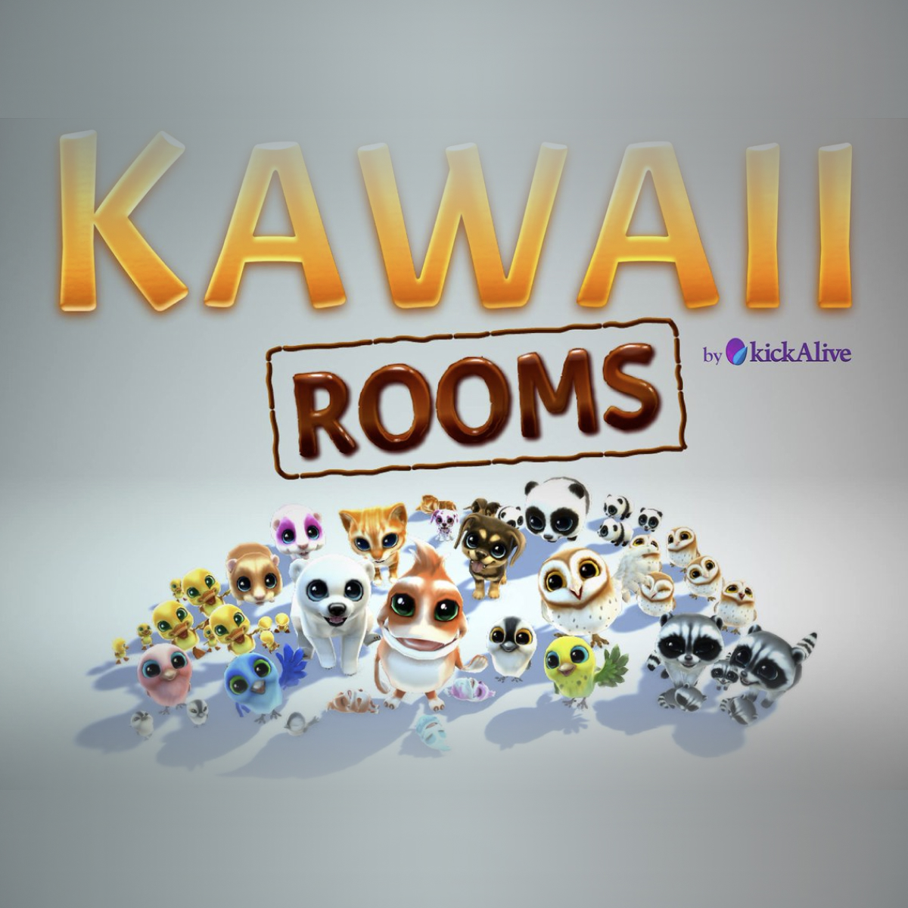
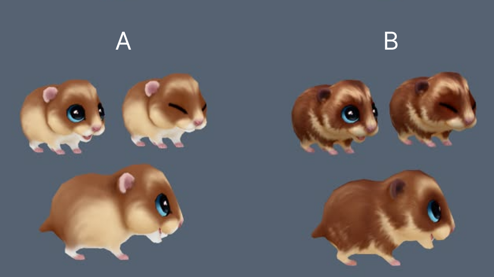
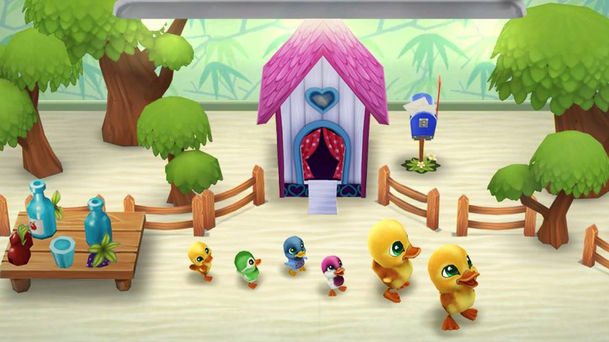
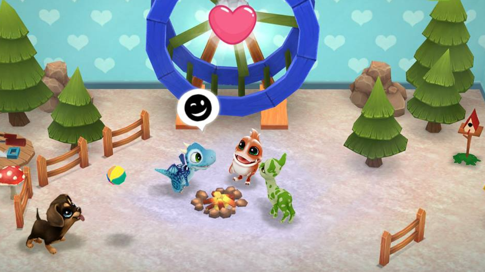
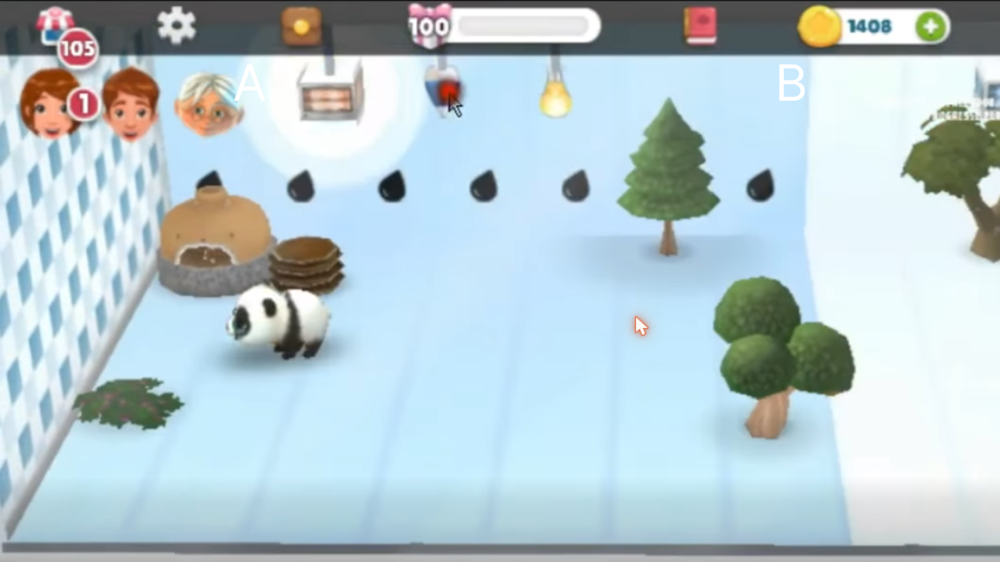
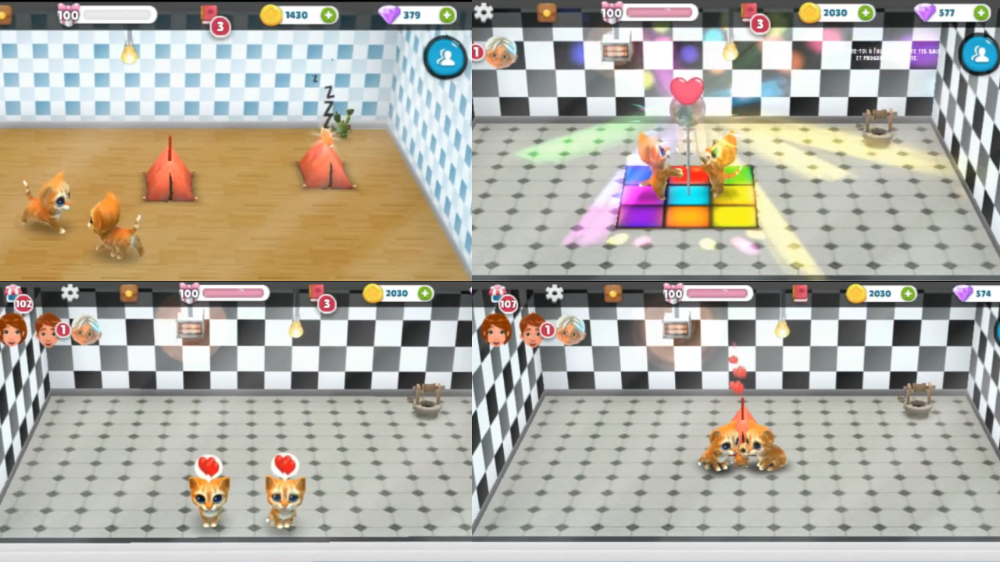
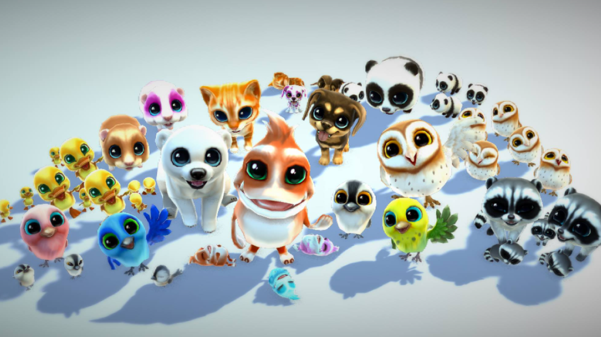
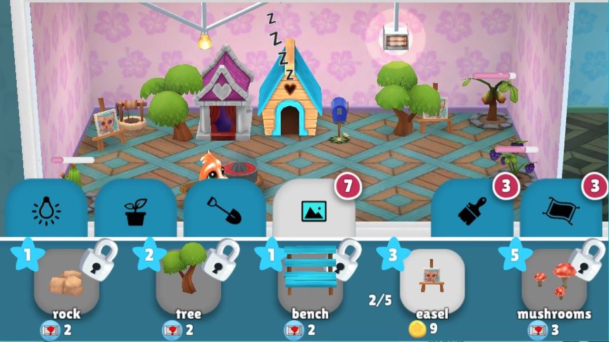

Case Study 02
A cosy Facebook game that blends social play, time management, building, and nurture. Care for pets, build out their rooms, and breed them to discover brand new species. Cute on the surface, with genuinely deep systems underneath.

The Aim
The north star for Kawaii Rooms was a world that felt genuinely alive. Pets with real needs and moods, relationships that grew over time, and rooms that responded to how you cared for them. Every system existed to make the world feel lived-in rather than laid out, so that players weren't arranging furniture, they were looking after a little world of their own.
The Game
Kawaii Rooms was a Facebook game that pulled four genres together at once: social, time management, builder, and nurture. Players cared for cute pets, built out their personal living spaces, and bred them to discover entirely new species. It was built to drive both a quick daily visit and a long-term collection goal.
The tone was deliberately warm and cute, but the systems underneath were anything but shallow. A pet's wellbeing, its relationships, and its room all had real mechanical consequences. None of it was just for show, and carrying that depth lightly was the heart of the design challenge.
From the Studio · kickAlive
Meet the Cast



"What if the whole point of the game was being a matchmaker? And what if that meant genuinely caring for your pets first?"
The Systems

Every pet had a set of live needs: temperature regulation, regular feeding with the right food, and social time. These weren't passive timers. Neglecting them genuinely affected a pet's mood, health, and readiness to breed, so players came back each day because something was at stake, not because a clock told them to.

Pets had to form social bonds before they could breed. That was a deliberate choice to slow the breeding loop down and build emotional investment along the way. Players introduced pets, managed compatibility, and grew relationships over time. Some pets clicked, others clashed, and finding the right match took observation and a bit of experimentation.

The core long-term progression mechanic. A successful pairing produced offspring that inherited a blend of traits from both parents: appearance, temperament, preferences, and stats. Certain rare combinations produced entirely new species, and those were the discovery moments the whole game was built around. It followed soft, learnable rules, so it felt surprising without ever feeling random.

Each pet had its own room to decorate. The key was that items weren't cosmetic. Each one nudged the pet's mood, social confidence, comfort, or breeding readiness. A room was both an expressive space and a strategic one, which gave players a natural reason to keep earning items and placing them thoughtfully, all without the mechanic ever feeling transactional.
The Core Loop, at Three Timescales
Feed, regulate temperature, and socialise. Keep pets healthy and emotionally ready.
Build relationships toward compatibility. Unlock new items. Experiment with room arrangements.
Breed rare combinations. Discover new species. Complete the collection. Share what you find.
The tension running through the whole project was building systems that were genuinely complex without ever making players feel like they were doing homework. The nurture mechanics, the genetics, the item effects: none of them were surfaced as systems. They were surfaced as feelings. Is my pet happy? Do these two get along? Does this room feel right for them?
That approach, where the mechanics serve an emotional story rather than reading like a spreadsheet, is what I think gives casual games lasting engagement. Players don't need to understand the system. They just need to care about how it turns out, and to feel like the little world in front of them is genuinely alive.